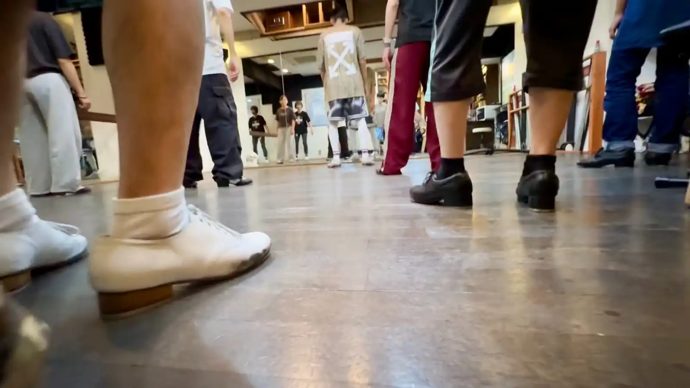
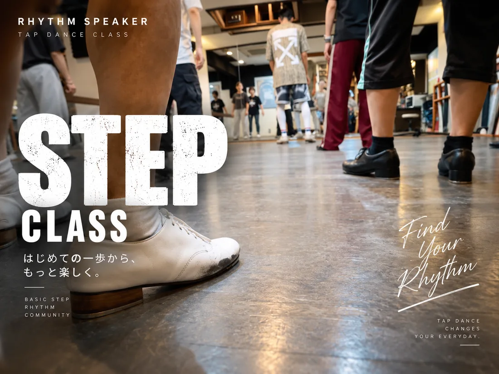

STEP 超初級 🔰
タップ未経験者向け。立ち方、膝の使い方、足のどの部分で床を叩くかを確認し、極めてシンプルな動作から音を出します。


LEVEL PATH
STEPでは「できる・できない」を急いで判定しません。まず一音を出し、基本動作を確認し、少しずつ音と動きをつなげていきます。
タップ未経験者向け。立ち方、膝の使い方、足のどの部分で床を叩くかを確認し、極めてシンプルな動作から音を出します。
基本ステップを組み合わせ、簡単なリズムパターンやコンビネーションへ進みます。複数の音をつなげる感覚を育てます。
基礎を使って、各インストラクターの音楽性・リズム・コンビネーション・表現へ広げていきます。
初めてならSTEP超初級から。 クラスや日時は、希望を送ってから相談できます。
STEPの体験を申し込むYOUR FIRST STEP
「いつ行ける？」「どのクラスがいい？」は、希望を送ってから相談できます。完全未経験の方にはSTEP超初級がおすすめです。
初回体験 ¥1,000 ／ 入会金0円 ／ 靴・ウェア無料。日時は送信時点では未確定で、LINE等での返信後に決まります。
申込フォームで、都合のよい日時とSTEPクラスを選びます。
入力した申込文章を確認して送信します。
担当者からの案内で、受講日時を決めます。
INSTRUCTORS
共通の基礎カリキュラムを、それぞれの指導スタイルで学べます。気になる講師のカードから、紹介と担当クラスを確認できます。講師を決めずに体験申込しても大丈夫です。
講師選びに迷ったら、まずは体験から。希望日時を送る
HOW STEP WORKS
STEPは講師ごとの振付クラスではなく、Rhythm Speakerの基礎学習システムとして運用します。
足のどこで床を鳴らすか、身体をどう支えるかを確認します。
基本ステップを一つずつ練習し、同じ音を安定して出せるようにします。
基本ステップを組み合わせ、簡単なリズムやコンビネーションへ進みます。
STEP → TAP
STEPで覚えた音や動きは、その先のTAP CLASSで音楽や表現へつながります。最初から上手く踊ることより、まず一音ずつ身体に入れていくことを大切にします。